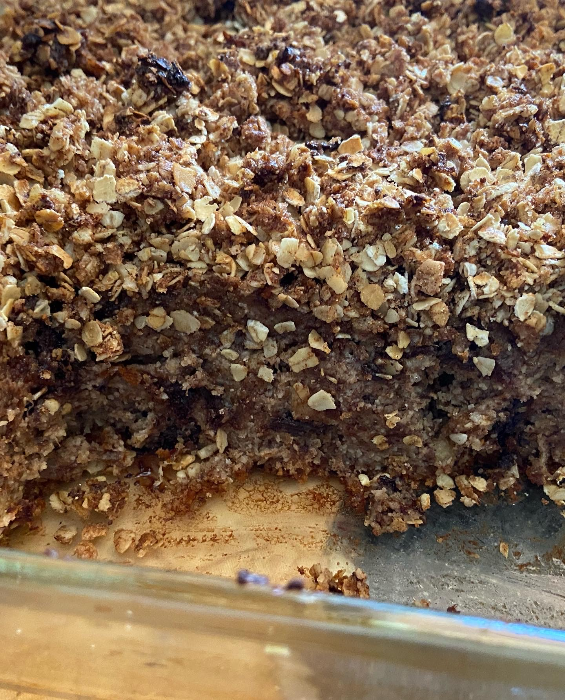
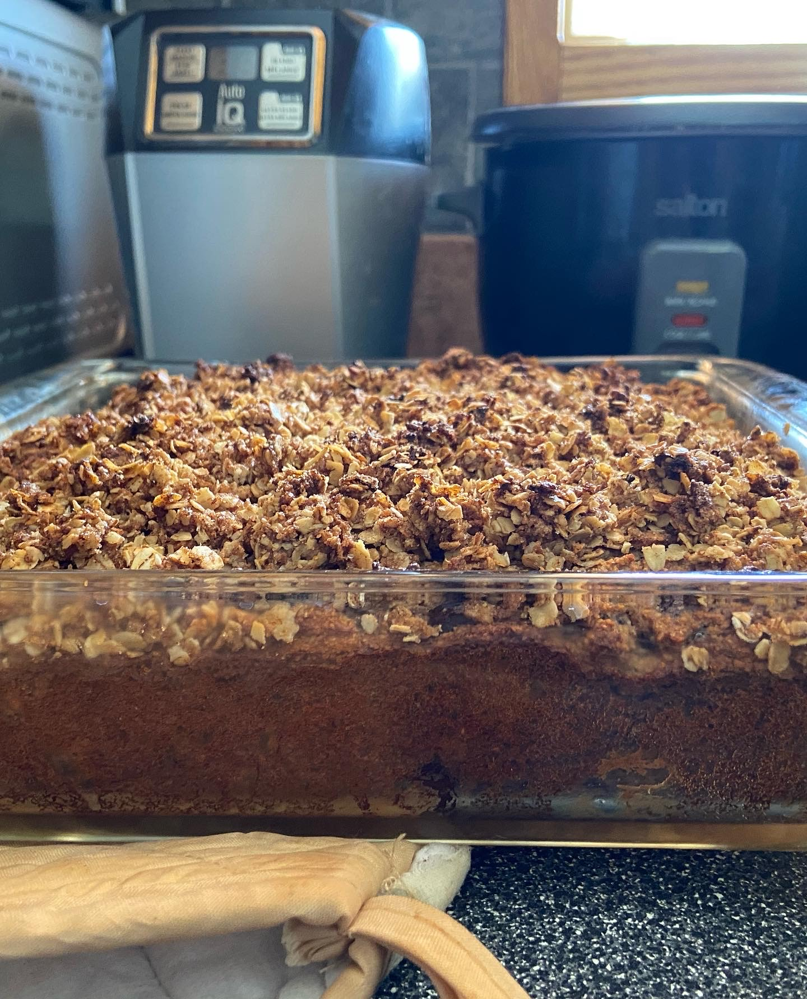
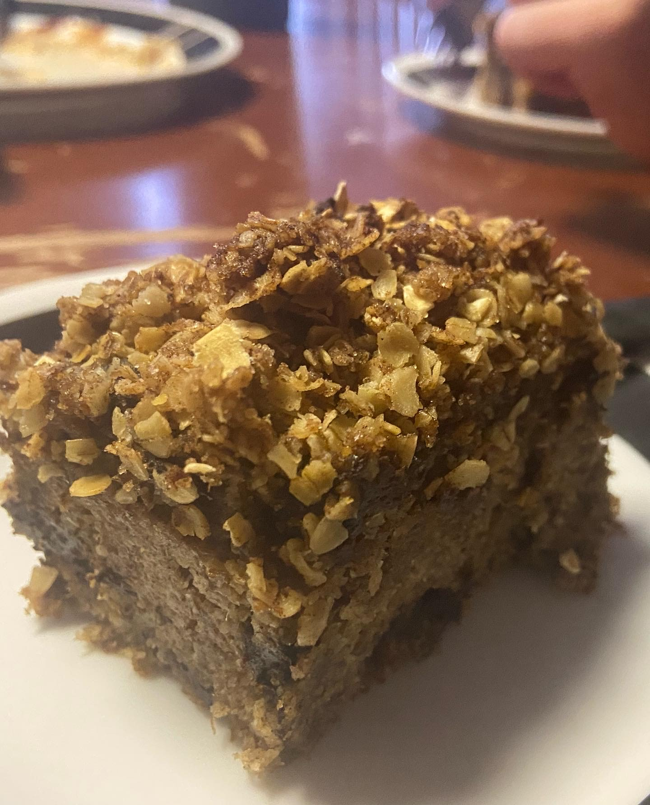

Chocolate Chunk Banana Crumble Bread
Picking the Right Bananas
Dozens of banana breads later, I have finally perfected my banana picking skills.
This receipe does not have a lot of added sugar (sometimes I leave the sugar out entirely),
so the key to still having a sweet and flavourful banana bread is really really ripe bananas.
Steps for the perfect baking bananas
- Ripen Bananas at Room Temperture until VERY Spotty (reduced to clear bananas are ususally perfect)
- Put Bananas in the freezer overnight (or longer, I've stored mine for up to 3 months and they did not lose flavour)
- Defrost Bananas in Fridge overnight or at room temperture for at least 5 hours (bananas should be fully defrosted, even leaking slightly)

Ingredients
Banana Bread
- 300g almond flour
- 80g ground flax seeds
- 5 bananas (see above)
- 3 large eggs
- 100g 70% dark chocolate bar
- 60g brown sugar
- 1 tbsp vanilla extract (you can add less, I really like vanilla extract)
- 1-2 tsp cinnamon
- 1 tsp baking powder
- 1/2 tsp sea salt
Crumble Topping
- 50g salted butter (cold)
- 60g brown sugar
- 90g quick oats
- 1 tsp cinnamon
- 1/2 tsp sea salt

Directions
- Preheat Oven to 350F
- Roughly chop dark chocolate bar until you have small chunks. I like to keep mine about the size of a hazelnut but you decide how small you want to chop them.
- Mix wet ingredients together: Bananas, Eggs, Vanilla Extract, Brown Sugar.
- Mix dry ingredients: Almond Flour, Ground Flax Seeds, Baking Powder, Cinnamon, Salt.
- Combine wet and dry ingredients until you have a uniform batter.
- Fold in chocolate chunks.
- Line baking dish with butter and pour in dough. Tap on counter a few times to reduce air pockets.
- Combine crumble ingredient in a bowl. Use your fingers to massage the cold butter into the sugar and oats. Stop when there are no more large butter chunks.
- Sprinkle crumble on top of the banana bread
- Bake for 30-35 minutes.
- Let cool for about 15 minutes and enjoy!
- I usually store mine in the fridge and reheat in the microwave for about 40 seconds. It should be good for at least 3-4 days, if it lasts that long!
